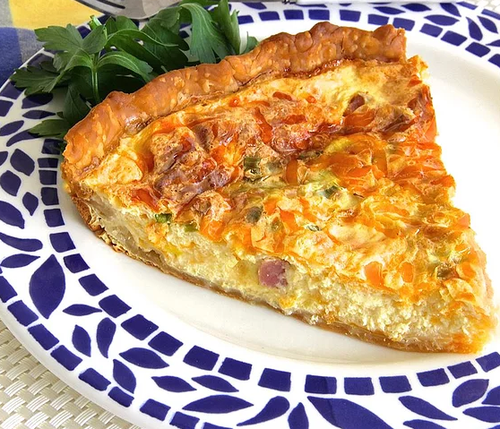

Ham and Cheese Quiche

Description
Quiche is a French tart consisting of pastry crust filled with savoury custard and pieces of cheese, meat, seafood or vegetables.
The best-known variant is quiche Lorraine, which includes lardons or bacon. Quiche can be served hot or cold. It is popular worldwide.
Ingredients
- 1 (9 inch) pastry for a 9-inch pie crust
- 1 cup shredded Cheddar cheese, divided
- ½ cup shredded Swiss cheese
- 2 tablespoons all-purpose flour, divided
- ½ cup diced cooked ham
- 2 tablespoons honey mustard
- 1 ¼ cups half-and-half
- 5 eggs, beaten
- ¼ cup green onions
- ¼ teaspoon salt
Steps
- Preheat oven to 400 degrees F (200 degrees C).
- Press pie pasty into the bottom of a 9-inch pie plate.
- Bake pie crust in preheated oven for 5 minutes, use a fork to poke holes into the crust, and continue cooking until lightly browned, about 5 minutes more.
- Reduce oven heat to 350 degrees F (175 degrees C).
- Mix 1/2 cup Cheddar cheese, Swiss cheese, and 1 tablespoon flour in a bowl; spread over the warm pie crust.
- Stir ham and honey mustard together in a bowl to coat the ham completely; spoon over the cheese mixture.
- Mix half-and-half, eggs, green onions, 1 tablespoon flour, and salt together in bowl. Pour mixture carefully over the ham layer; top with remaining Cheddar cheese.
- Bake in preheated oven until set in the center, 40 to 50 minutes. Cool for 10 minutes before cutting.